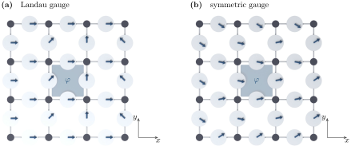

Page 5 of 13 of this session
4.8 The Landau gauge and the symmetric gauge
A uniform magnetic field can be written with many vector potentials, so which one do we take? We will see that the Landau gauge keeps the translation along \(y\), which a band structure needs, and that the symmetric gauge keeps the rotation, which the many-body states need. In both, only the sum of the Peierls phases around a closed loop is physical.
\[t_{ij} \;\longrightarrow\; t_{ij}\, \exp\!\left(i\int_{\mathbf{R}_j}^{\mathbf{R}_i} \mathbf{A}\cdot d\boldsymbol{\ell}\right). \tag{4.4}\]
This is the Peierls substitution of Section 4.7. The hopping \(t_{ij}\) from site \(j\) to site \(i\) of a lattice gets a phase, which comes from the line integral of the vector potential \(\mathbf A\) along the bond.
For a uniform field \(\mathbf{B} = B\hat{z}\), there are two gauges that will be important for us.
The Landau gauge, \(\mathbf{A} = (0, Bx, 0)\), puts all the spatial dependence into one coordinate, \(x\). Since \(\mathbf{A}\) does not depend on \(y\), the Hamiltonian built from it still commutes with \(p_y\), so translations along \(y\) are still a good symmetry, but it does not commute with \(p_x\). This gauge keeps one translational symmetry, which is what we need to have a band structure at all, and it is the gauge that we use in every ribbon calculation in this session.
The symmetric gauge, \(\mathbf{A} = \tfrac{B}{2}(-y, x, 0)\), breaks both translational symmetries but keeps the rotational symmetry of the system instead. It is the natural gauge to write many-body wavefunctions with a good angular momentum, which is what we need when we arrive at the fractional quantum Hall state, from Section 4.13 on.
Figure 4.2 shows the difference in a concrete way, by writing both gauges as Peierls phases (4.4) on a square lattice. The phases of the single bonds are completely different in the two gauges, but the sum around any plaquette is the same flux in both. This sum is the only gauge-invariant combination, and it is the only thing that the electrons respond to.
For the uniform field \(\mathbf B=B\hat z\) we use two vector potentials, the Landau gauge and the symmetric gauge,
\[\mathbf A_L=(0,\,Bx,\,0), \qquad \mathbf A_S=\frac{B}{2}\,(-y,\,x,\,0).\]
Both have \(\nabla\times\mathbf A=B\hat z\). So the sum of the Peierls phases around any plaquette is the same in the two gauges, and it is fixed by the flux through the plaquette.
The steps From the two vector potentials to the bond phases of one plaquette
We take the lattice constant \(a=1\) and one plaquette with its lower left corner at \((x,y)\). We go around it counterclockwise, along the bottom, the right, the top and the left bond. On the top bond we move in the direction \(-x\), and on the left bond in the direction \(-y\). The phase of each bond comes from the line integral of \(\mathbf A\) along it in (4.4). We write it in units of \(\varphi\), the sum of the four phases, as Figure 4.2 does. In these units a phase is the line integral divided by \(B\), the flux through the plaquette.
The simplest case is the Landau gauge. There \(A_x=0\), so the bottom and the top bond have no phase. Along the right bond \(A_y=B(x+1)\) is constant, and along the left bond \(A_y=Bx\), which we go down. The four phases are
\[0,\qquad (x+1)\,\varphi,\qquad 0,\qquad -x\,\varphi,\]
with the sum \(\varphi\). Only the vertical bonds have a phase, and it grows with the column \(x\), which is the pattern of panel (a) of Figure 4.2.
In the symmetric gauge \(A_x=-By/2\) and \(A_y=Bx/2\), so the bottom bond has \(A_x=-By/2\), the right bond \(A_y=B(x+1)/2\), the top bond \(A_x=-B(y+1)/2\) and the left bond \(A_y=Bx/2\). With the signs of the two bonds that we go backwards, the four phases are
\[-\frac{y}{2}\,\varphi,\qquad \frac{x+1}{2}\,\varphi,\qquad \frac{y+1}{2}\,\varphi,\qquad -\frac{x}{2}\,\varphi,\]
and their sum is again \(\varphi\), for any \(x\) and \(y\).
The reason is Stokes’ theorem. The sum of the line integrals around the plaquette is the integral of \(\nabla\times\mathbf A\) over its area, and this is \(B\) times the area \(1\) in both gauges, since both have the curl \(B\hat z\). For the plaquette with the corner \((2,1)\) the phases are \(0\), \(3\varphi\), \(0\) and \(-2\varphi\) in the Landau gauge, and \(-\tfrac12\varphi\), \(\tfrac32\varphi\), \(\varphi\) and \(-\varphi\) in the symmetric gauge. No bond has the same phase in the two gauges, and both sums are \(\varphi\).

We take the Landau gauge \(\mathbf{A}=(0,Bx,0)\), where the Hamiltonian is
\[H=\frac{1}{2m}\Big[p_x^2+\big(p_y-eBx\big)^2\Big].\]
Which momentum is a good quantum number?
Show the answers
- A. ✗ False
This is false. The term \((p_y-eBx)^2\) of the Hamiltonian contains \(x\), so \([p_x,H]\neq0\). The eigenstates are oscillator states centered at some \(x_0\), and not plane waves in \(x\).
- B. ✗ False
This is false. The Hamiltonian does not depend on \(y\), so \([H,p_y]=0\). The eigenstates can be chosen as \(e^{ik_yy}\) times a function of \(x\).
- C. ✓ True
This is true. The vector potential does not depend on \(y\), so \([H,p_y]=0\). It depends on \(x\), so \(p_x\) does not commute with \(H\).
A ribbon is periodic along \(y\), and we want its bands \(E(k_y)\). Why do we take the Landau gauge, and not the symmetric gauge?
Show the answers
- A. ✗ False
This is false. Both gauges have the same curl. For \(\mathbf{A}=(0,Bx,0)\) and for \(\mathbf{A}=(-By,Bx,0)/2\) we get \(\nabla\times\mathbf{A}=B\hat z\).
- B. ✓ True
This is true. The physics is the same in both gauges. The Landau gauge keeps the translation along the ribbon, which is what we need to plot energy against momentum.
- C. ✗ False
This is false. The flux through a plaquette of area \(a^2\) is \(Ba^2\) in both gauges, since it is gauge invariant. Only the way it is written in the bond phases differs.
The field is \(\mathbf B=\nabla\times\mathbf A\). Which vector potential gives the field \(B\hat z\)?
Show the answers
- A. ✗ False
This is false. Here \(\partial_xA_y-\partial_yA_x=0-B=-B\), so this is the field \(-B\hat z\), with the same size and the opposite direction.
- B. ✓ True
This is true. The \(z\) component of the curl is \(\partial_xA_y-\partial_yA_x=0-(-B)=B\). This is also a Landau gauge, which keeps the translation along \(x\), and it differs from \((0,Bx,0)\) by the gradient of \(-Bxy\).
- C. ✗ False
This is false. Here \(A_y\) depends only on \(y\) and \(A_x=0\), so the curl is zero. This \(\mathbf A\) is the gradient of \(By^2/2\), and it gives no field at all.
The symmetric gauge and the Landau gauge give the same field, so they differ by a gauge change. Find the function \(\chi(x,y)\) with
\[\mathbf A_S=\mathbf A_L+\nabla\chi,\]
where \(\mathbf A_L=(0,Bx,0)\) and \(\mathbf A_S=\tfrac B2(-y,x,0)\).
Solution
We subtract the two vector potentials,
\[\mathbf A_S-\mathbf A_L=\Big(-\frac{By}{2},\ \frac{Bx}{2}-Bx,\ 0\Big)=\Big(-\frac{By}{2},\ -\frac{Bx}{2},\ 0\Big).\]
So we need \(\partial_x\chi=-By/2\) and \(\partial_y\chi=-Bx/2\). The first condition gives \(\chi=-Bxy/2+f(y)\), and the second one then gives \(f'(y)=0\), so
\[\chi=-\frac{Bxy}{2},\]
up to a constant. A gauge change adds to the phase of a bond a term that depends only on \(\chi\) at the two ends of the bond, so these terms cancel around any loop. For the plaquette with the corner \((2,1)\) and \(a=1\), the values of \(\chi/B\) at the four corners are \(-1\), \(-\tfrac32\), \(-3\) and \(-2\). Their differences along the four bonds, taken counterclockwise, are \(-\tfrac12\), \(-\tfrac32\), \(1\) and \(1\). These are the symmetric phases minus the Landau phases of the fold above, in units of \(\varphi\), and their sum is zero.
So the two gauges give the same physics, and we can check it on a computer. A \(10\times10\) island of the square lattice with the phase \(\varphi=\pi/6\) around each plaquette has the same levels in the two gauges, to \(10^{-10}\) in units of the hopping. On a ribbon along \(y\) the symmetric gauge makes the Hamiltonian depend on \(y\), while the Landau gauge does not, and this is why we use the Landau gauge for a band structure.
- In Section 4.13 the symmetric gauge gives holomorphic wavefunctions for the lowest Landau level.
- In Section 8.10 the mean-field bonds of a spin liquid have a gauge redundancy of their own, and again only the product around a plaquette is physical.
- In Section 5.2 a superconductor breaks the gauge symmetry, and the flux through a ring is quantized in units of \(h/2e\).